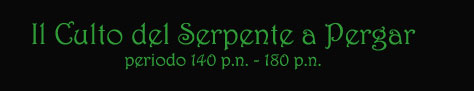

Nato
intorno al 93 p.n. inflictus è succeduto all’anziano Augarian che rivoluzionò
nei decenni dopo la morte dell’ultimo imperatore dell’Impero Nordor ( gli
anni in cui si è cominciato a contare, si parla degli anni 65-70 p.n.
inflictus ) l’organizzazione del culto e la politicizzò. Augarian scelse
Lindegrad come suo successore e si occupò di evitare che all’interno del
culto vi fossero altri chierici in grado di mettere in discussione alla sua
morte la nomina di Lindegrad a Grande Sacerdote. Augarian cominciò a non farsi
più vedere intorno al 136 p.n. data della sua ultima apparizione pubblica e
Lindegrad ne prese il posto nel 139 p.n.. La fonte ufficiale del Tempio Supremo
del Serpente avallata dal Concilio delle Vesti Rosse racconta che passò nelle
sue stanze gli ultimi anni della sua vita e morì il XIII Croon del 139 p.n.
inflictus a ormai vecchissimo e stanco alla venerabile età di 106 anni (essendo
nato nel 33 p.n.).
Lindegrad
è un uomo austero e silenzioso, a cui piace tramare nell’ombra, è un
chierico potente come esperienza e potere magico ma molto più potente come uomo
politico e manovratore di intrighi e complotti anche a livello internazionale.
Nel suo aspetto fisico lo contraddistingue l’essere totalmente calvo e avere
gli occhi verde scuro dotati di un potere quasi magnetico, la sua voce è
profonda e calda.
Sono
gli unici due posti di Adepto del Veleno Sacro nella capitale e quindi sono
molto ambiti. Il Grande Sacerdote cura l’organizzazione solo dei riti in cui
partecipano vesti rosse mentre a uno di questi Adepti del Veleno Sacro è
delegata la preparazione dei riti per le vesti azzurre ( ruolo che lo mette in
contatto con personaggi potenti spesso all’interno del Granducato ) e
all’altro quelli per le sole vesti nere ( che numericamente sono molto
numerose ).
L’Adepto
del Veleno Sacro Ventiria
( intorno al 9° livello )
E’
una donna bellissima, che sebbene nata nel 114 p.n. si mantiene in ottima forma
anzi, sembra migliorare con gli anni. E’ una sacerdotessa, astuta e al tempo
stesso velenosa come il più letale dei serpenti. La sua bellezza è conosciuta
in tutto il Granducato di Karsar almeno quanto la sua brama di potere e la sua
sete di vendetta. Ha lunghi capelli neri che le arrivano infondo alla schiena,
le sue curve sono abbondanti ma proporzionate e ha grandi occhi neri con un
taglio di stampo silveriano. Nessun chierico del Serpente può farle testa,
eccezion fatta del Gran Sacerdote. Unica fra i chierici possiede una
fedelissima guardia personale di Combattenti del Serpente che utilizza non solo
per difendersi dai pochi nemici ancora in vita che ha. Passa molto tempo ad
accrescere il proprio potere come chierico e si dice sia proprietaria di un
potente artefatto magico. E’ stata a costei delegata la preparazione di tutti
i riti religiosi rivolti alle vesti azzurre e all’interno del Granducato,
nessuna veste azzurra viene nominata senza il suo consenso.
L’Adepto
del Veleno Sacro Krandai
( intorno all'8°
livello )
E’ un fedelissimo di Lindegrad e pende dalle labbra del Grande Sacerdote per il quale darebbe anche l’anima. Per anni si è occupato della gestione economica del Tempio Supremo del Serpente per poi essere scelto, a scapito di Draigar, come secondo Adepto del Veleno Sacro di stanza nella capitale Pergar. A lui sono delegate la preparazione di tutti i riti che coinvolgono esclusivamente vesti nere e compiti di reclutamento di nuovi vesti nere, anche se, specie per il numero di fedeli che gestisce, svolge un ruolo assai importante, non è affamato di potere ed ha un carattere a volte molto remissivo. A tale carattere va aggiunta la sua età ormai avanzata, è nato nel 87 p.n., a cui non corrisponde un adeguato potere ed esperienza come chierico. Per tali suoi attitudini non si sono creati attriti con Ventiria che lo tiene agilmente sotto controllo.
Gli altri Adepti del Veleno Sacro
Sono
gli Adepti del Veleno Sacro a cui sono delegate le funzioni del culto in luoghi
diversi dalla capitale, in appositi Templi del Veleno. Costoro non hanno
grossa potere sulle maggiori istituzioni del Granducato, che si trovano a
Pergar, inoltre non si trovano a stretto contatto con il Grande Sacerdote, però hanno una gestione totale del culto nelle loro zone e sono dotate di
grande autonomia e prestigio locale essendo il più alto esponente del Culto di
quei territori.
L’Adepto
del Veleno Sacro del Tempio del Veleno di Simiar Draigar
( intorno al 9° livello )
Chierico
dotato e ambizioso ha fatto rapida carriera all’interno del culto. Amante
delle ricerche e delle avventure è un esperto è forte combattente. La sua
brama di potere lo ha posto ben presto in aperto contrasto con Ventiria (
rispetto a cui è nato nel 101 p.n. ) e forse per questo motivo è stato
allontanato dalla capitale del Granducato. Comunque è riuscito a crearsi un
vero impero a Simiar, grazie alla sua passione e al suo talento per la
scrittura di pergamene magiche è riuscito ad accumulare una vera fortuna in
termini di ricchezza e prestigio anche fuori dal Granducato ( commercia
pergamene specie con i chierici di Silvisk ). Con le sue ricchezza ha costruito
un Tempio del Veleno grande e potente, che ha la struttura di una roccaforte
militare, al suo soldo inoltre vi è un vero esercito di mercenari ( circa 300
), possiede inoltre una ricca compagnia commerciale e con svariate navi che
utilizza per i suoi commerci.
L’Adepto
del Veleno Sacro del Tempio del Veleno di Mirgan Avondarios
( intorno 9° livello )
Vecchissimo
chierico del Serpente (nato nel 75 p.n. inflictus) è l’unico ad organizzare
il culto nella Contea del Sud. Appartiene anche lui, infatti, alla famiglia
nobile dei Quarras, la famiglia del Conte Kalagan Quarras che governa la Contea
del Sud. Non si intromette mai nelle vicende politiche del Culto del Serpente
essendo interessato alla gestione della Contea stessa, altri membri dei Quarras
sono Adepti del Veleno (non sacri, ovviamente) alle sue dipendenze e molto
probabilmente fra costoro sarà scelto il successore di Avondarios. Non si
conoscono molte notizie di costui e il Grande Sacerdote difficilmente
interferisce nella sua gestione della fede nella Contea.
L’Adepto
del Veleno Sacro del Tempio Veleno di Imian Iorgen
( intorno al 7° livello )
Nato
nel 132 p.n. ha fatto subito carriare per finire con il trovarsi in una
posizione tanto influente da anni ( Imian è la seconda città del Granducato
come numero di abitanti e per importanza ) è stato probabilmente scelto per la
sua fedeltà al Grande Sacerdote e la sua abilità come combattente. Viene dai
più considerato intelligente ma privo di coraggio ed, in particolare,
incapace di compiere atti di crudeltà quando richiesti ( cosa che non è vista
in modo molto positivo, ad Imian infatti i riti sacrificali sono alquanto rari, il minimo possibile ). L’influenza del Grande Sacerdote su questo Tempio
del Veleno è molto forte, infatti questi spesso si reca in visita da Iorgen,
ciò fa crescere le voci secondo cui Lindegrad non si fidi molto del giovane
chierico.
L’Adepto
del Veleno Sacro del Tempio Veleno di Molgon Uan
Makran ( intorno
al 9° livello )
Il
meno conosciuto di tutti è al servizio della nobile famiglia dei Molgon a cui
appartiene il Barone della Baronia della Lunga Notte, si dice che sia un tipo
schivo e meschino ( che sarebbe nato intorno al 110 p.n. ) e che abbia simpatie
politiche per Ventiria che lo aiuterebbe a gestire le faccende care ai Molgon
nella Capitale.